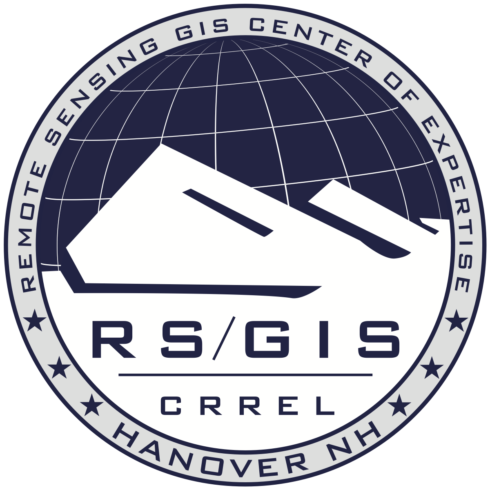

Introduction to PDAL
- Point Data Abstraction Library
- "GDAL for point cloud data"
- Focus (in priority)
- Translation
- Processing
- Exploitation
Started in 2010

Used by USACE GRiD project for data warehousing
Pipelines orchestrate operations
Applications invoke pipelines
def filter(ins,outs):
# Keep only points with classification 1 or 2
cls = ins['Classification']
keep_classes = [1,2]
# Use the first test for our base array.
keep = np.equal(cls, keep_classes[0])
# For 1:n, test each predicate and join back
# to our existing predicate array
for k in range(1,len(keep_classes)):
t = np.equal(cls, keep_classes[k])
keep = keep + t
outs['Mask'] = keep
return True
On to Software installation